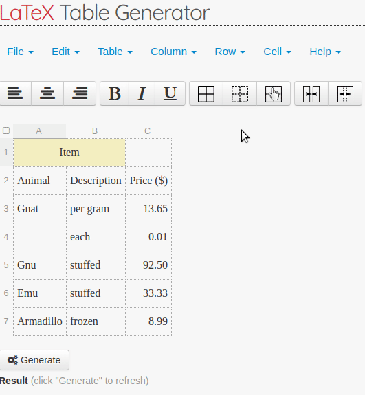

How to add or remove cell borders
Our generator provides a basic tool for editing of individual cells’ borders. Specifically, it is possible to edit vertical and horizontal border of each cell separately. Below you can see an example animation explaining how to edit borders.

By holding SHIFT a border can be added to / removed from a whole row or column.
Using only horizontal lines should be preferred as it improves legibility in most cases.